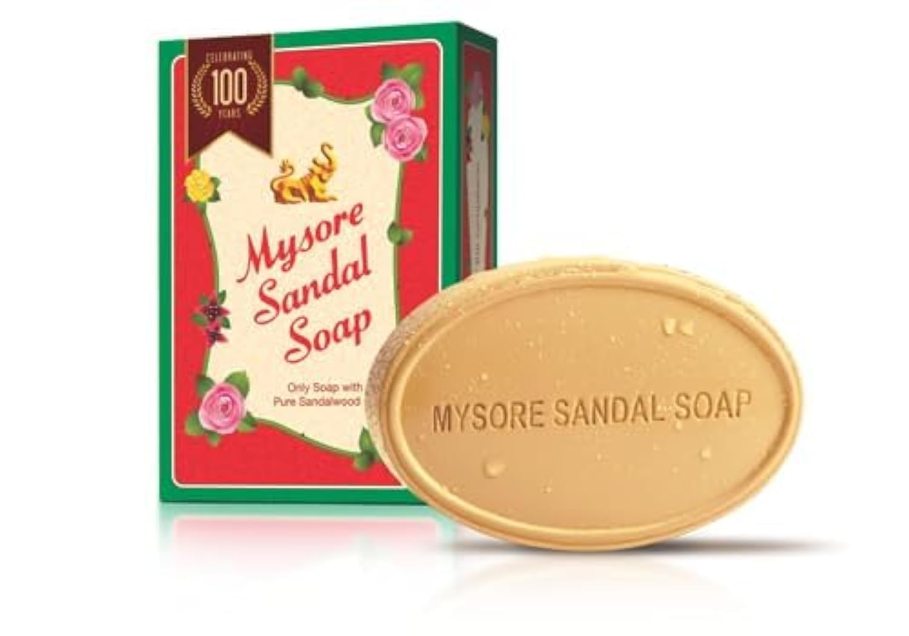
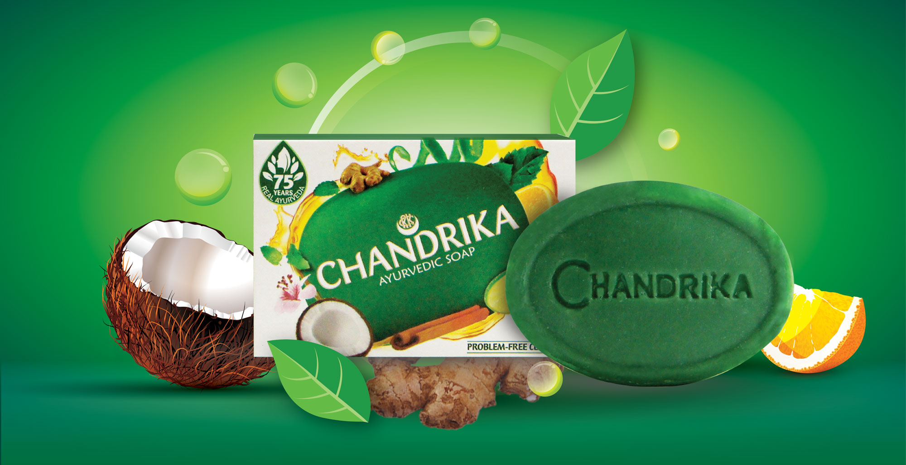
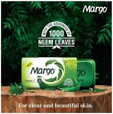
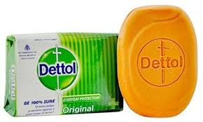

Moti Soap

The moti soap is a special occasion soap used during festivals. The moti gulab (rose) is my favorite soap. It smells divine.
Mysore Sandal Soap
One of the best Indian brands with the highest quaility ingredients including sandalwood. This soap smells great. I also have a perfume talc that I like to use as a deodarant after using this soap.
Chandrika Soap
Chandrika soap is good for skin and it smells amazing.
Margo Soap
Margo is an old Indian brand that has existed for quite a while. The margo neem soap is good for skin as it contains neem. Neem is also known as the bitter boon with so many medicinal benefits. Neem juice is great for skin and hair.
Shikekai Soap

The Godrej shikekai soap was used to wash hair. It has a beautiful pink color and is the og soap for hairwash before shampoos became a huge deal.
Dettol Soap
It is highly likely for every Indian home that has children to have this soap. Dettol is one of the oldest and trusted brands in India. I like dettol soap and I have used it a lot.
Doy Soap

Every soap has a story. The doy soap has a story from my childhood. My aunt bought this soap for me when I was a child. It is a very happy memory. The 8 year old me was delighted to see the cute animal shaped soaps. The cute animal shaped soap made bathing so much fun. I found it on Flipkart and Amazon but it is currently unavailale on both the sites.